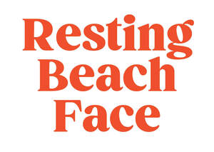

Trade Mark Journal No.2025/051 19 December 2025
UK00004252204 20 August 2025 (9,16,18,35)

- Class 9
- Cases for sunglasses; Cases for eyeglasses and sunglasses; Cases for spectacles and sunglasses; Sunglass cases; Boxes [cases] for sunglasses; Cases for eyeglasses; Sunglasses; Eyewear cases; Cases for eyewear; Glasses cases; Eyeglass cases; Cases for spectacles; Fashion sunglasses; Boxes [cases] for glasses; Straps for sunglasses; Chains for spectacles and for sunglasses; Chains for spectacles and sunglasses; Laptop cases; Laptop carrying cases; Protective cases for laptops; Phone cases; Eyewear pouches; Waterproof cases for smartphones; Waterproof cases for smart phones; Laptop bags; Flotation clothing.
- Class 16
- Gift bags; Paper gift bags; Plastic shopping bags; Paper shopping bags; Shopping bags of paper or plastic; Paper bags; Carrier bags; Stationery; Paper stationery; Printed stationery; Office stationery; Stationery boxes; Stationery folders; Writing stationery; Adhesives for stationery; Pads [stationery]; Pencil ornaments [stationery]; Pencil ornaments (stationery); Stationery and educational supplies; Pocket books [stationery]; Cases for stationery; Stationery cases; Document holders [stationery]; Adhesives for stationery purposes; Writing cases [stationery]; Adhesive pads [stationery]; Tapes (adhesive -) [stationery]; Self-adhesive tapes for stationery and household purposes; Self-adhesive tapes for stationery or household purposes; Adhesive foils stationery; Organizers for stationery use; Self-adhesive tapes for stationery use; Document holders being articles of stationery; Notepads; Stickers; Bumper stickers; Adhesive stickers; Stickers [stationery]; Cardboard hangtags; Adhesive labels of paper; Printed emblems; Printed paper signs; Paper hangtags; Adhesive labels; Cartons of card for packaging; Packaging cartons of card; Paper emblems; Paper gift tags; Gummed tape [stationery]; Rubber stamp; Stamp pads; Paper badges; Posters; Poster magazines; Advertising posters; Mounted posters; Posters made of paper; Advertisement boards of paper; Advertisement boards of cardboard; Printed advertising boards of paper; Printed advertising boards of cardboard; Picture postcards; Postcard paper; Advertising signs of paper or cardboard; Printed flyers; Postcards and picture postcards; Advertising signs of paper; Graphic prints; Graphic art prints; Advertising signs of cardboard; Flyers; Signboards of paper or cardboard; Printed brochures; Display banners made of cardboard; Printed advertisements; Printed visuals; Printed leaflets; Advertising pamphlets; Graphic reproductions; Art prints; Graphic prints and representations.
- Class 18
- Tote bags; Grocery tote bags; Carry-all bags; Cross-body bags; Crossbody bags; Drawstring bags; Bags; Canvas bags; Toiletry bags; Canvas shopping bags; Carrying bags; Belt bags and hip bags; Shoulder bags; Belt bags; Cloth bags; Kit bags; Souvenir bags; Reusable shopping bags; All-purpose carrying bags; Waterproof bags; Makeup bags; Wash bags for carrying toiletries; Drawstring pouches; Beach bags; Hand bags; Luggage, bags, wallets and other carriers; Bum bags; Weekend bags; Make-up bags; Waist bags; Toiletry bags sold empty; Towelling bags; Dog coats; Coats for dogs; Dog collars; Dog leashes; Dog clothing; Dog apparel; Collars for pets; Clothing for dogs; Dog leads; Animal leashes; Collars for animals; Collars of animals; Pet clothing; Holdalls for sports clothing.
- Class 35
- Retail services connected with the sale of clothing and clothing accessories; Advertising; Advertising and marketing; Advertising copywriting; Advertising and publicity; Publicity and advertising; Banner advertising; Television advertising; Copywriting for advertising and promotional purposes; Promotion, advertising and marketing of on-line websites; Mail-order advertising; Magazine advertising; Outdoor advertising; On-line advertising; Design of advertising flyers; Distribution of advertising, marketing and promotional material; Design of advertising brochures; Classified advertising; Distribution of advertising brochures; Preparation of advertising campaigns; Marketing; Production of advertising matter; Wholesale services in relation to cups and glasses; Wholesale services in relation to bags; Retail services in relation to cups and drinking glasses; Wholesale services in relation to stationery supplies; Window dressing.
Harbour and Tide Ltd